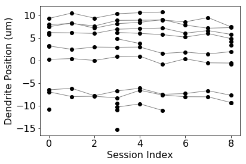
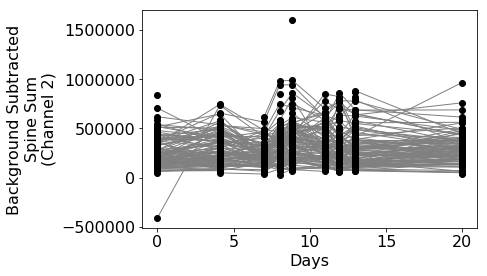
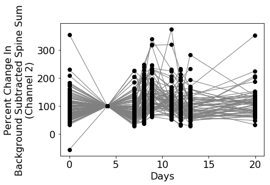
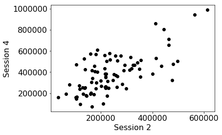
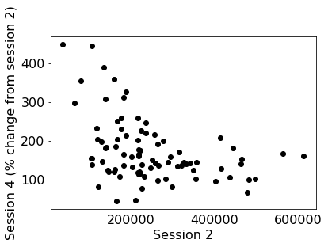
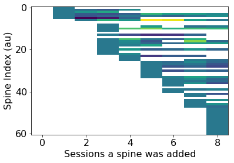

a-plotting-annotations
Map plotting examples
We will load an example map, get annotation values as 2D NumPy arrays, and plot the values using MatplotLib. The plotting can just as easily be done with any Python library such as Plotly or Pandas.
Import the packages we will use
import numpy as np
import matplotlib.pyplot as plt
import matplotlib as mpl
from pymapmanager import mmMap
from pymapmanager.mmUtil import newplotdict
# check the version of pymapmanager
import pymapmanager
print('pymapmanager version is', pymapmanager.__version__)
# set some matplotlib defaults so our plots look better
fontsize = 16
mpl.rcParams['xtick.labelsize'] = fontsize
mpl.rcParams['ytick.labelsize'] = fontsize
pymapmanager version is 0.0.5
Load a map
filePath = 'exampleMaps/rr30a/rr30a.txt'
m = mmMap(filePath=filePath)
map rr30a loaded in 0.42 seconds.
Plot the position of each spine along its segment tracing
# getMapValues2(self, stat, roiType='spineROI', segmentID=[], plotBad=False)
print('Number of map segments:', m.numMapSegments)
segmentID = 3 # None to plot all segment, [1,3,5] to plot segment 1, 3, and 5
# m.getMapValues2() returns a 2D numpy ndarray
# rows are object runs, columns are sessions, each [i][j] is value for 'stat'
x = m.getMapValues2('mapSession', segmentID=segmentID)
y = m.getMapValues2('pDist', segmentID=segmentID)
# plot with matplotlib
plt.plot(x.transpose(), y.transpose(), '-k', linewidth=1.0, color='gray')
plt.plot(x, y, 'ok')
plt.xlabel('Session Index', fontsize=16)
plt.ylabel('Dendrite Position (um)', fontsize=16)
plt.show()
Number of map segments: 5
mmMap.getMapValues3() took 0.04 seconds
mmMap.getMapValues3() took 0.02 seconds

Plot the 'background subtracted spine sum' from image channel two.
segmentID = None # All segments
x = m.getMapValues2('days', segmentID=segmentID)
y = m.getMapValues2('ubssSum_int2', segmentID=segmentID)
# plot with matplotlib
plt.plot(x.transpose(), y.transpose(), '-k', linewidth=1.0, color='gray')
plt.plot(x, y, 'ok')
plt.xlabel('Days', fontsize=16)
plt.ylabel('Background Subtracted\nSpine Sum\n(Channel 2)', fontsize=16)
plt.show()
mmMap.getMapValues3() took 0.03 seconds
mmMap.getMapValues3() took 0.02 seconds

Normalize to session 1 and replot.
mmMap.getMapValues returns 2D numpy arrays where earch row is a run of objects and columns are sessions. We can normalize each annotation at [i][j] to itself at session 1 with [i][session]
segmentID = None # All segments
x = m.getMapValues2('days', segmentID=segmentID)
y = m.getMapValues2('ubssSum_int2', segmentID=segmentID)
sessionOne = y[:,[1]]
yPercent = y / sessionOne * 100
# plot with matplotlib
plt.plot(x.T, yPercent.T, '-k', linewidth=1.0, color='gray')
plt.plot(x, yPercent, 'ok')
plt.xlabel('Days', fontsize=16)
plt.ylabel('Percent Change In\nBackground Subtracted Spine Sum\n(Channel 2)', fontsize=16)
plt.show()
mmMap.getMapValues3() took 0.03 seconds
mmMap.getMapValues3() took 0.03 seconds

Compare a stat on two different sessions
Here we compare the values at session 4 with the values at session 2.
session4 = y[:,[4]] # pull annotations from sessions 4
session2 = y[:,[2]] # pull annotaitons from session 2
# plot with matplotlib
plt.plot(session2, session4, 'ok')
plt.xlabel('Session 2', fontsize=16)
plt.ylabel('Session 4', fontsize=16)
plt.show()

Normalize one session against another
And then normalize the values at session 4 with the values at session 2.
session4 = y[:,[4]]
session2 = y[:,[2]]
session4Norm = session4 / session2 * 100
# plot with matplotlib
plt.plot(session2, session4Norm, 'ok')
plt.xlabel('Session 2', fontsize=16)
plt.ylabel('Session 4 (% change from session 2)', fontsize=16)
plt.show()

Plot length of added spines normalized to the 'birth day'.
The color in the plot corresponds to the intensity of a spine as a function of its 'birth' day, e.g. the day it was added..
Here we will use mmMap.getMapValues3() which takes a plot struct. Making it easier to specify paremeters to the plot.
This example is plotting session, it would make more sense to plot 'days'.
plotDict = newplotdict()
plotDict['plotbad'] = True
plotDict['xstat'] = 'days'
plotDict['ystat'] = 'pDist'
plotDict['zstat'] = 'ubssSum_int2' #'sLen3d_int1' #swap in any stat you like, e.g. 'ubssSum_int2'
plotDict['segmentid'] = [0]
plotDict = m.getMapValues3(plotDict)
plotDict2 = dict(plotDict)
plotDict2['xstat'] = 'isAdd'
plotDict2['ystat'] = 'isSub'
plotDict2['zstat'] = 'isTransient'
plotDict2 = m.getMapValues3(plotDict2)
#only plot added spines
x = m.getMapValues2('days', segmentID=plotDict['segmentid']) # get an array of values
new_z2 = []
for i, row in enumerate(plotDict['z']):
#if np.count_nonzero(~np.isnan(row)) > 0:
for j, val in enumerate(row):
if plotDict2['x'][i,j] == 1: # gives us the session a spine was added
#row = row / row[j] * 100 # z-color as '% change' from session spine was added
row = row - row[j] # z-color as 'absolute change' from session spine was added
new_z2.append(row)
break
plt.imshow(new_z2, aspect='auto')
plt.xlabel('Sessions a spine was added', fontsize=16)
plt.ylabel('Spine Index (au)', fontsize=16)
plt.show()
mmMap.getMapValues3() took 0.03 seconds
mmMap.getMapValues3() took 0.03 seconds
mmMap.getMapValues3() took 0.03 seconds

Homework
- Plot ubssSum_int2 vs pDist, sort along pDist, calculate auto-correlation function at lag 1. Peaks in auto-correlation indicate 'hot spots' along dendritic segment. Do this for all segments in a map.
- Plot a heat map of spine run vs session where color is ubssSum_ch2
- plot ubssSum as a function of a spines age. X-axis should be days where day 0 is appearance of new spine. This plot will only have added spines
- Do the same for spine 'death' where x-axis counts down to day 0 when a spine is subtracted